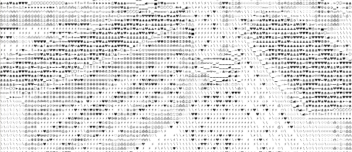

This font was designed in July 2009, for the graphic identity of Cimatics A\V Platform. It gathers glyphs from FreeSerif, FreeSerifItalic, DejaVuSans, DejaVuSerif, the OSP_frog mascot, the Cimatics two piece heart, a baronchon_palm_tree from Open Clip Art Library and private use dingbats drawn for Cimatics (Cimatics_scare_eye, white_pentagon).
